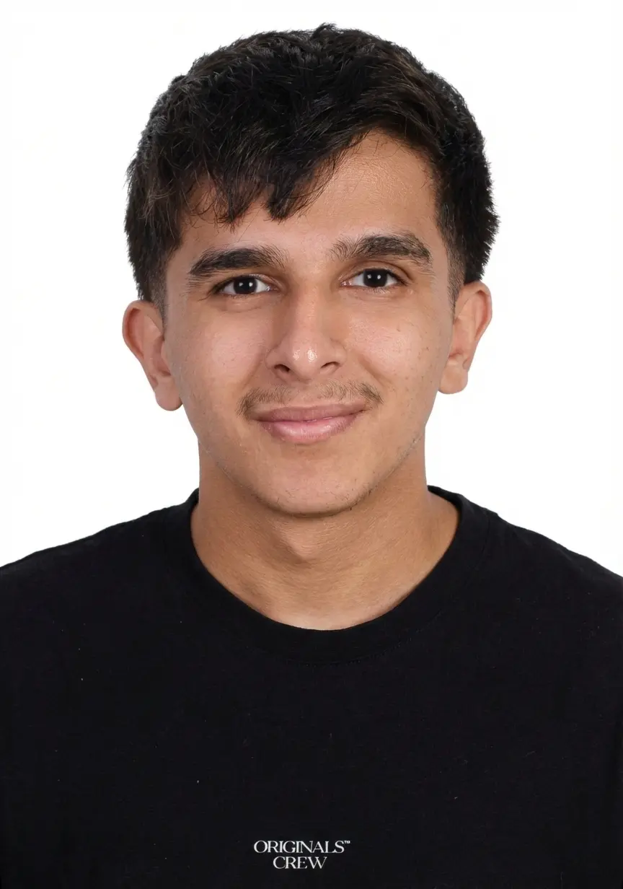

⌘
Product & UX
Research, user flows, information architecture, interaction design, and testable product decisions.
I’m Yahya El-Sawi, a UI/UX designer and frontend developer based in Dubai. My work connects product thinking, responsive interfaces, immersive learning, network automation, and hands-on implementation.
Research, user flows, information architecture, interaction design, and testable product decisions.
Responsive interfaces and reusable visual systems designed with implementation in mind.
Turning schemas, operations, and technical systems into interfaces people can understand.
I’m currently based in Dubai and enjoy working on projects that solve real problems—combining design thinking with hands-on implementation.

I’m currently open to full-time opportunities and product collaborations.
Start a conversation →